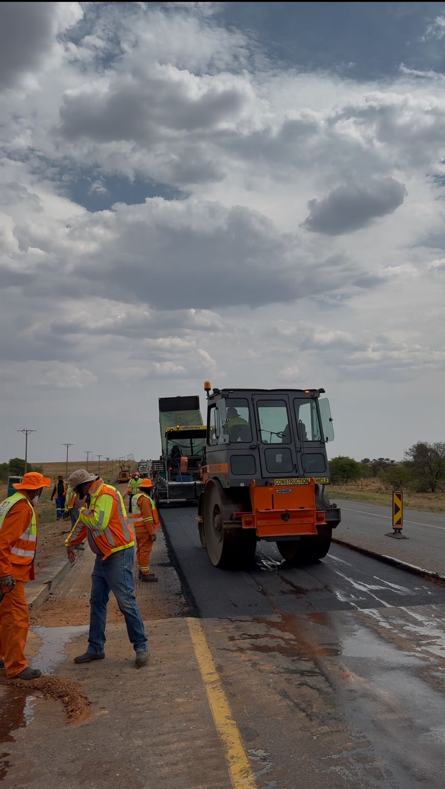

Welcome to My Civil Engineering Portfolio
I am a Candidate Civil Technologist specializing in road construction and resurfacing projects. My expertise includes project management, quality control, and ensuring compliance with COTO and SANRAL specifications.
Featured Project
Resurfacing of National Route N12 Section 15
Currently overseeing a R149 million resurfacing project for SANRAL, ensuring compliance with quality standards and efficient site management.
 View All Projects